Lecture 06: Kernels, Triton
TL;DR:
* Benchmarking & Profiling are crucial: Always measure performance to identify bottlenecks, rather than guessing. Use torch.cuda.synchronize() and warm-up iterations for accurate GPU timings.
* GPU Architecture: Understand SMs, memory hierarchy (DRAM, L2, L1, registers), and the execution model (Grid, Thread Block, Thread, Warp) for efficient kernel design.
* Kernel Fusion: Combine multiple element-wise operations into a single kernel to reduce expensive memory transfers between global memory (DRAM) and on-chip caches.
* CUDA C++: Provides fine-grained control over GPU hardware, allowing for highly optimized kernels, but requires manual management of threads, blocks, and memory.
* Triton: A Python-based DSL for GPU programming that offers a higher-level abstraction than CUDA C++, automatically managing memory coalescing, shared memory, and scheduling, often achieving performance comparable to hand-written CUDA.
* torch.compile: PyTorch's JIT compiler can automatically fuse operations and optimize kernels, providing significant speedups without manual kernel writing, especially for common patterns like element-wise operations and matrix multiplications.
Key concepts:
* GPU architecture (SMs, memory hierarchy)
* GPU execution model (Grid, Thread Block, Thread, Warp)
* Arithmetic intensity (FLOPs/bytes)
* Benchmarking (wall-clock time)
* Profiling (time spent per function/kernel)
* torch.cuda.synchronize()
* Warm-up iterations
* CPU-GPU asynchronous execution
* Kernel fusion
* CUDA C++
* Triton DSL
* PTX (Parallel Thread Execution)
* torch.compile (JIT compilation)
* Memory coalescing
* Shared memory
[0:00] Introduction and Lecture Plan
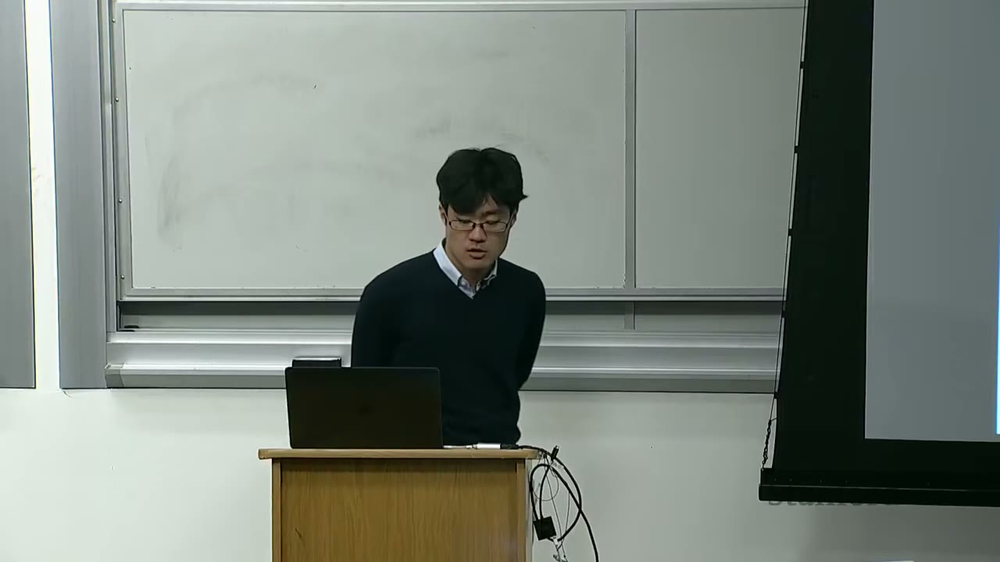
This lecture focuses on writing high-performance code for GPUs, specifically for standard components in language models.
Lecture Agenda: 1. Review of GPUs: A brief overview of GPU architecture and execution model. 2. Benchmarking & Profiling: Basic techniques for measuring and understanding performance. 3. Kernel Fusion Motivation: Understanding why combining operations is crucial for performance. 4. CUDA Kernels in C++: Writing custom GPU kernels using CUDA C++. 5. Triton Kernels in Python: Writing custom GPU kernels using the Triton DSL. 6. PyTorch Compilation: Leveraging PyTorch's built-in JIT compiler for automatic optimization. 7. More Advanced Computations: Applying these techniques to a softmax implementation.
The goal is to dig deep into the PTX (Parallel Thread Execution) machine code to understand what the GPU is doing under the hood.
[1:47] Announcements
- Assignment 1: Has concluded. The leaderboard is still active for submissions and updates.
- Assignment 2: Is now released. It involves GPU kernels and parallelism. This lecture will cover the GPU kernel part, and next week will cover parallelism (data parallelism, etc.).
[2:25] Review of GPUs
Hardware Overview
- GPU Structure (e.g., A100/H100): Consists of many Streaming Multiprocessors (SMs). An A100 has 108 SMs.
- SM Structure: Each SM contains a large number of units for computation (e.g., FP32, INT32 cores, Tensor Cores).
- Memory Hierarchy:
- DRAM (Global Memory): Large (e.g., 80GB on A100), but slow.
- L2 Cache: Smaller (e.g., 40MB on A100), faster.
- L1 Cache (Shared Memory): Even smaller (e.g., 192KB per SM), very fast.
- Register File: Very fast memory directly accessible by individual threads. Heavy use of registers is key for high-performance code.
Execution Model
- Grid: A collection of Thread Blocks (CTAs - Concurrent Thread Arrays).
- Thread Block (CTA): A group of threads scheduled on a single SM. This is the atomic unit for scheduling.
- Thread: The individual unit of execution (i.e.,
f(i)). Each thread processes a part of the data.
Why Thread Blocks? Shared Memory: * Threads within a thread block can communicate with each other via shared memory (L1 cache speed, e.g., 164KB on A100). This is very fast. * Threads within a block can also synchronize for read/write operations. * Communication across thread blocks is very expensive (requires global memory). Therefore, data needed for inter-thread communication should ideally stay within the same thread block.
Waves (Warps): * Threads are scheduled on SMs in waves. A wave is a group of 32 threads that execute together. * Problem: The last wave in a thread block might have fewer threads, leading to low SM occupancy. * Wave Quantization: The number of thread blocks should ideally divide the number of SMs. * Rule of Thumb: The number of thread blocks should be $\ge 4 \times$ # SMs. * Challenge: Some aspects of hardware (e.g., scheduling, # SMs) are hidden from the execution model.
What is a Warp? A warp is a group of threads (typically 32) that are executed together. Warps exist to reduce the amount of control machinery needed, as a single control unit can manage 32 threads executing the same instruction. This allows for more compute units with simpler controls compared to CPUs.
[0:00] Arithmetic Intensity: # FLOPs / # bytes
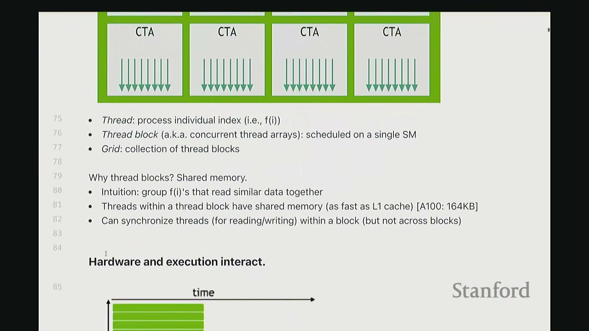
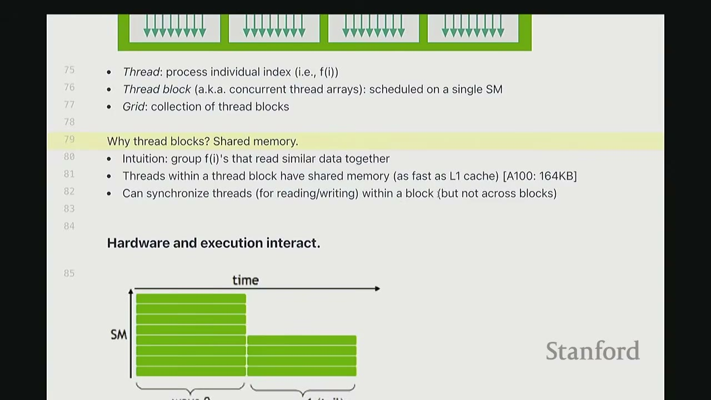
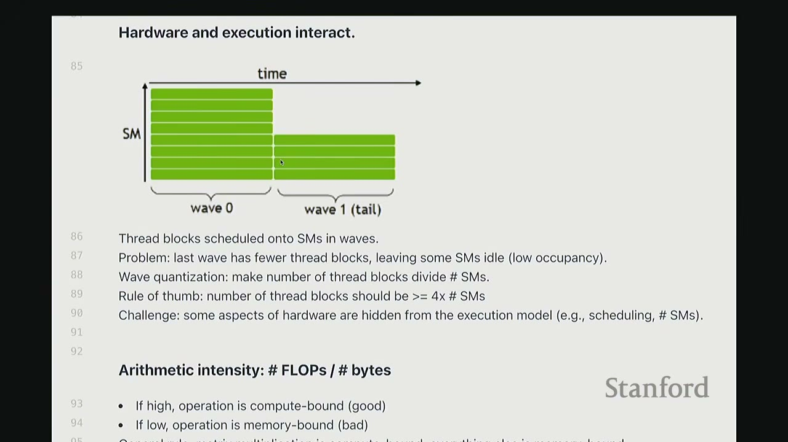
- Definition: The ratio of floating-point operations (FLOPs) to bytes transferred from/to memory.
- Goal: Keep arithmetic intensity high (more FLOPs per byte).
- High Intensity: Operation is compute-bound (good).
- Low Intensity: Operation is memory-bound (bad).
- Reasoning: Compute scaling is much faster than memory scaling. Many operations become memory-bound, meaning the GPU spends more time waiting for data than computing.
- General Rule: Matrix multiplication (if done cleverly) is compute-bound. Everything else is often memory-bound. We aim to reduce memory-bound operations.
[7:06] Benchmarking and Profiling
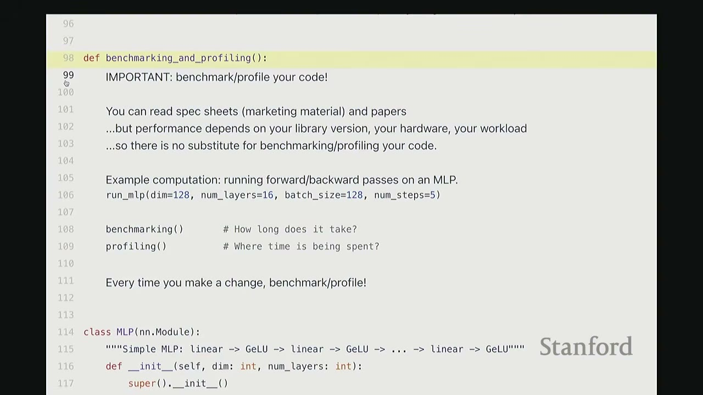
IMPORTANT: Benchmark/profile your code!
- You can read spec sheets (marketing material) and papers, but performance depends on your library version, your hardware, and your workload.
- There is no substitute for benchmarking/profiling your code.
- Every time you make a change, benchmark/profile!
[8:43] Example Computation: MLP
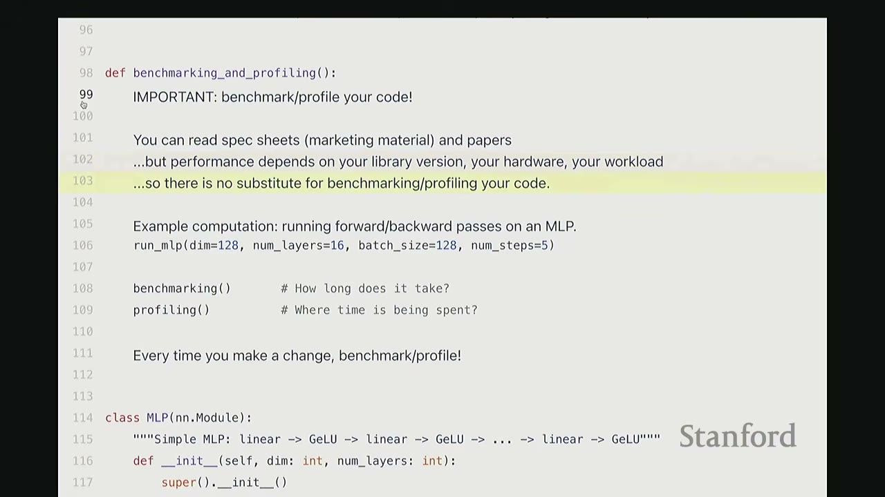
We'll use a simple Multi-Layer Perceptron (MLP) for demonstration.
* dim = 128 (dimension)
* num_layers = 16
* batch_size = 128
* num_steps = 5 (forward/backward passes)
class MLP(nn.Module):
"""Simple MLP: Linear -> GELU -> Linear -> GELU -> ... -> Linear"""
def __init__(self, dim: int, num_layers: int):
super().__init__()
self.layers = nn.ModuleList(
[nn.Linear(dim, dim) for _ in range(num_layers)]
)
def forward(self, x: torch.Tensor):
for layer in self.layers:
x = layer(x)
x = torch.nn.functional.gelu(x)
return x
def run_mlp(dim: int, num_layers: int, batch_size: int, num_steps: int) -> Callable:
# Define a model (with random weights)
model = MLP(dim, num_layers).to(get_device())
# Define an input (random)
x = torch.randn(batch_size, dim, device=get_device())
def run():
# Run the model `num_steps` times (note: no optimizer updates)
for step in range(num_steps):
# Forward
y = model(x)
# Backward
y.backward(y.mean())
return y
return run
[10:05] Benchmarking vs. Profiling
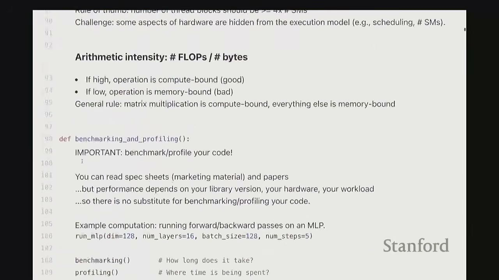
- Benchmarking: Measures the wall-clock time of performing some operation. It gives you end-to-end time, not where time is spent.
- Useful for: comparing different implementations, understanding how performance scales (e.g., with dimension).
- Profiling: Helps you understand where time is being spent within a function. Deeper profiling helps you understand what is being called under the hood.
[11:09] Benchmarking Implementation
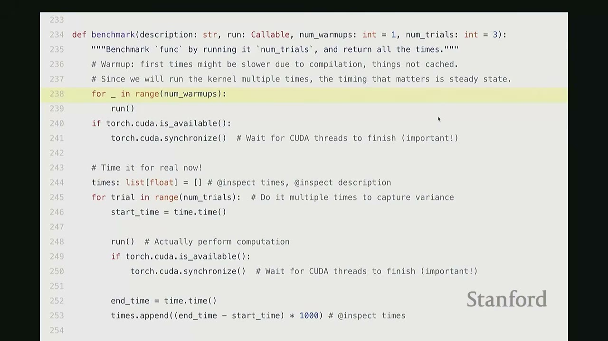
def benchmark(description: str, run: Callable, num_warmups: int = 1, num_trials: int = 3):
"""Benchmark `func` by running it `num_trials`, and compilation all the times."""
# Warmup: first times might be slower due to compilation, things not cached.
# Since we will run the kernel multiple times, the timing that matters is steady state.
for _ in range(num_warmups):
run()
if torch.cuda.is_available():
torch.cuda.synchronize() # Wait for CUDA threads to finish (important!)
# Time it for real now!
times: list[float] = [] # @inspect times, @inspect description
for trial in range(num_trials): # Do it multiple times to capture variance
start_time = time.time()
run() # Actually perform computation
if torch.cuda.is_available():
torch.cuda.synchronize() # Wait for CUDA threads to finish (important!)
end_time = time.time()
times.append((end_time - start_time) * 1000) # @inspect times
mean_time = mean(times) # @inspect mean_time
return mean_time
Key Considerations for Benchmarking:
1. Warm-up Iterations: The first few runs of a GPU kernel are often slower due to JIT compilation, caching, and other initialization overheads. Warm-up runs ensure you measure the steady-state performance.
2. torch.cuda.synchronize(): The CPU and GPU operate asynchronously. When the CPU dispatches a CUDA kernel, it doesn't wait for the GPU to finish before executing subsequent CPU code. To get accurate end-to-end GPU execution time, you must call torch.cuda.synchronize() before and after the timed operation to ensure both devices are synchronized. Otherwise, your measured time will only reflect the CPU's dispatch time, not the actual GPU computation.
3. Multiple Trials: Run the operation multiple times and take the mean to account for variance (e.g., due to thermal throttling).
[14:34] Benchmarking Matrix Multiplication
We benchmark torch.matmul for various square matrix dimensions on an A100 GPU.
if torch.cuda.is_available():
dims = ("1024", "2048", "4096", "8192", "16384")
# dims = (1024, 2048, 4096, 8192, 16384) # @inspect dims
# else:
# dims = (1024, 2048) # @inspect dims
matmul_results = []
for dim in dims:
# result = benchmark(f"matmul(dim={dim})", run_operation2(dim=dim, operation=lambda a, b: a @ b))
# matmul_results.append(result)
# @inspect matmul_results
pass # Code executed in the video, results shown below
Results (approximate values from video): * (1024, 0.70ms) * (2048, 0.83ms) * (4096, 3.14ms) * (8192, 21.68ms) * (16384, 162.93ms)
Observations: * For very small matrices (e.g., 1024x1024, 2048x2048), the runtime doesn't grow much. This is due to constant factor overheads like launching the kernel and data transfer between CPU and GPU. * For larger matrices, we observe super-linear scaling, as expected for matrix multiplication ($O(N^3)$ operations).
[15:40] Benchmarking MLP Scaling
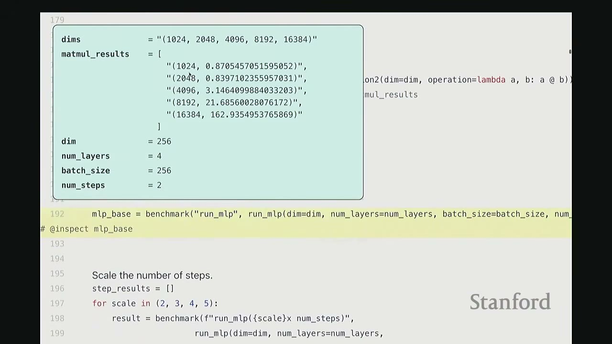
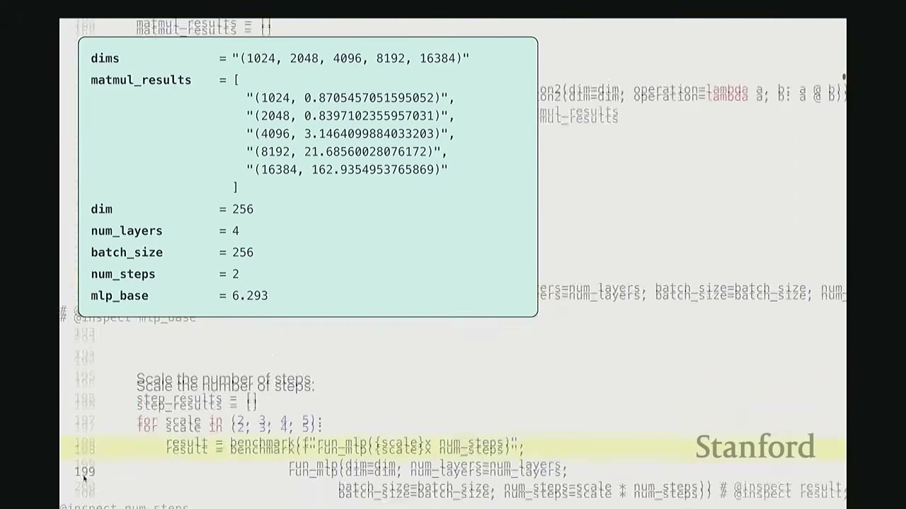
We benchmark our MLP by scaling the number of steps and layers.
# Let us benchmark our MLP!
dim = 256 # @inspect dim
num_layers = 4 # @inspect num_layers
batch_size = 256 # @inspect batch_size
num_steps = 2 # @inspect num_steps
mlp_base = benchmark("run_mlp", run_mlp(dim, num_layers, batch_size, num_steps))
# @inspect mlp_base # Result: 6.293 ms
# Scale the number of steps.
step_results = []
for scale in (2, 3, 4, 5):
# result = benchmark(f"run_mlp(scale={scale} x num_steps)", run_mlp(dim, num_layers, batch_size, scale * num_steps))
# step_results.append((scale, result)) # @inspect step_results
pass # Code executed in the video, results shown below
# Scale the number of layers.
layer_results = []
for scale in (2, 3, 4, 5):
# result = benchmark(f"run_mlp(scale={scale} x num_layers)", run_mlp(dim, scale * num_layers, batch_size, num_steps))
# layer_results.append((scale, result)) # @inspect layer_results
pass # Code executed in the video, results shown below
Results (approximate values from video):
* Base MLP (2 steps, 4 layers): 6.293 ms
* Scaling Steps:
* (2, 11.326 ms)
* (3, 16.761 ms)
* (4, 22.028 ms)
* (5, 27.310 ms)
* Observation: Linear scaling with num_steps, approximately 5ms per step.
* Scaling Layers:
* (2, 9.783 ms)
* (3, 13.274 ms)
* (4, 16.856 ms)
* (5, 20.847 ms)
* Observation: Linear scaling with num_layers, approximately 4ms per layer.
Conclusion: For both num_steps and num_layers, the runtime scales linearly, as expected.
[17:46] Profiling Implementation
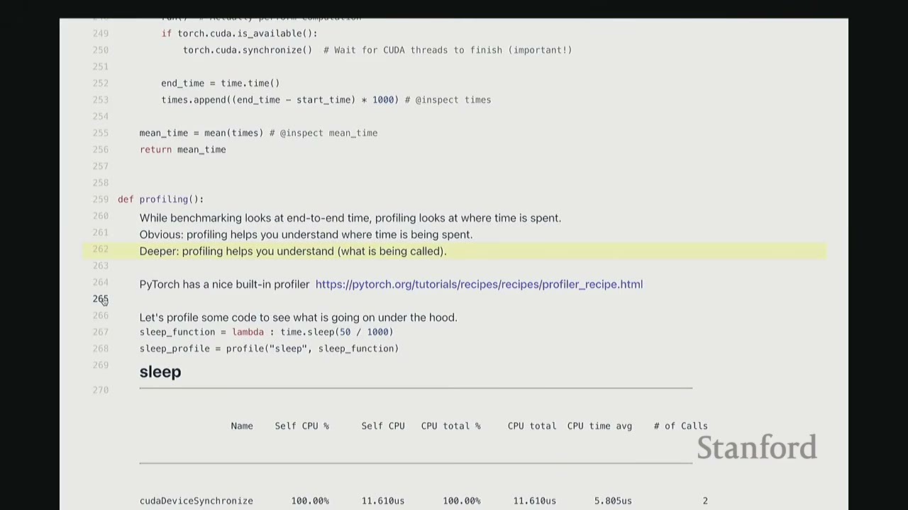
def profiling(description: str, run: Callable, num_warmups: int = 1, with_stack: bool = False):
"""Profile `run` by running it `num_warmups` times, and print a table."""
# Warmup
for _ in range(num_warmups):
run()
if torch.cuda.is_available():
torch.cuda.synchronize() # Wait for CUDA threads to finish (important!)
# Run the code with the profiler
activities = [ProfilerActivity.CPU, ProfilerActivity.CUDA]
if with_stack:
# Output stack trace for visualization
# Needed to export stack trace for visualization
# experimental_config=torch.profiler.ExperimentalConfig(verbose=True) as prof:
pass # Simplified for brevity
with torch.profiler.profile(activities=activities, with_stack=with_stack) as prof:
run()
if torch.cuda.is_available():
torch.cuda.synchronize() # Wait for CUDA threads to finish (important!)
# Print out table
print(prof.key_averages().table(sort_by="cuda_time_total", row_limit=10, max_name_width=80))
# Write stack trace visualization
# prof.export_stack_trace(f"{description}.txt")
return prof
Key Benefits of Profiling:
* Deeper Insight: Helps understand what is being called under the hood, not just end-to-end time.
* PyTorch's Built-in Profiler: torch.profiler is a convenient tool that allows you to see low-level CUDA calls without leaving the Python environment.
[19:02] Profiling sleep function
sleep_function = lambda : time.sleep(50 / 1000)
sleep_profile = profiling("sleep", sleep_function)
Profiling Output for sleep:
Name Self CPU % Self CPU CPU total % CPU total CUDA time % CUDA time # of Calls
-------------------- ---------- ------------ ------------- ------------ ------------- ------------ ----------
cudadeviceSynchronize 100.00% 11.610us 100.00% 11.610us 100.00% 11.610us 2
-------------------- ---------- ------------ ------------- ------------ ------------- ------------ ----------
Self CPU time total: 11.610us
Observation: 100% of the time is spent in cudadeviceSynchronize because time.sleep is a CPU-only operation, and the GPU is idle.
[19:53] Profiling add (Element-wise addition)
add_function = lambda a, b: a + b
add_profile = profiling("add", run_operation2(dim=2048, operation=add_function))
Profiling Output for add (2048x2048 matrices):
Name Self CPU % Self CPU CPU total % CPU total CUDA time % CUDA time # of Calls
--------------------------------------------------------------------- ---------- ------------ ------------- ------------ ------------- ------------ ----------
aten::add 98.02% 1.39ms 99.24% 1.41ms 0.00% 0.00us 1
void at::native::vectorized_elementwise_kernel<4, at::native::cuda_add_f... 0.00% 0.00us 0.00% 0.00us 99.30% 16.90us 1
cudaLaunchKernel 0.00% 0.00us 0.00% 0.00us 0.70% 0.12us 1
cudadeviceSynchronize 0.00% 0.00us 0.00% 0.00us 0.00% 0.00us 1
--------------------------------------------------------------------- ---------- ------------ ------------- ------------ ------------- ------------ ----------
Self CPU time total: 1.420ms, Self CUDA time total: 17.02us
Observations:
* The Python a + b call (aten::add) takes 1.39ms on the CPU.
* This dispatches to a specific CUDA kernel (vectorized_elementwise_kernel) which takes 16.90us on the GPU.
* cudaLaunchKernel (CPU sending command to GPU) takes 0.12us.
* cudadeviceSynchronize takes negligible time here.
* The CPU time is dominated by the aten::add wrapper, indicating overhead in dispatching to the GPU.
[22:21] Profiling matmul (Matrix Multiplication)
matmul_function = lambda a, b: a @ b
matmul_profile = profiling("matmul", run_operation2(dim=2048, operation=matmul_function))
Profiling Output for matmul (2048x2048 matrices):
Name Self CPU % Self CPU CPU total % CPU total CUDA time % CUDA time # of Calls
--------------------------------------------------------------------- ---------- ------------ ------------- ------------ ------------- ------------ ----------
aten::matmul 99.20% 7.23ms 99.34% 7.24ms 0.00% 0.00us 1
void at::native::cutlass::kernel_2048_2048_2048_stage2_warp_size_64... 0.00% 0.00us 0.00% 0.00us 99.85% 342.62us 1
cudaLaunchKernel 0.00% 0.00us 0.00% 0.00us 0.15% 0.52us 1
cudadeviceSynchronize 0.00% 0.00us 0.00% 0.00us 0.00% 0.00us 1
--------------------------------------------------------------------- ---------- ------------ ------------- ------------ ------------- ------------ ----------
Self CPU time total: 7.280ms, Self CUDA time total: 343.14us
Observations:
* Similar pattern to add, but the GPU kernel (cutlass::kernel...) takes significantly longer (342.62us) than for add, as expected for matrix multiplication.
* The cutlass library is NVIDIA's high-performance matrix multiply library.
[25:46] Profiling matmul (different dimension)
matmul_profile_dim128 = profiling("matmul(dim=128)", run_operation2(dim=128, operation=matmul_function))
Profiling Output for matmul (128x128 matrices):
Name Self CPU % Self CPU CPU total % CPU total CUDA time % CUDA time # of Calls
--------------------------------------------------------------------- ---------- ------------ ------------- ------------ ------------- ------------ ----------
aten::matmul 99.20% 7.23ms 99.34% 7.24ms 0.00% 0.00us 1
void at::native::xmma_gemm_f32f32_f32_t_t_t_stage2_warp_size_64... 0.00% 0.00us 0.00% 0.00us 99.85% 342.62us 1
cudaLaunchKernel 0.00% 0.00us 0.00% 0.00us 0.15% 0.52us 1
cudadeviceSynchronize 0.00% 0.00us 0.00% 0.00us 0.00% 0.00us 1
--------------------------------------------------------------------- ---------- ------------ ------------- ------------ ------------- ------------ ----------
Self CPU time total: 7.280ms, Self CUDA time total: 343.14us
Observations:
* For a smaller 128x128 matrix, PyTorch dispatches to a different CUDA kernel (xmma_gemm...). This kernel is optimized for smaller dimensions.
* This illustrates that the specific CUDA kernels called depend on the tensor dimensions and underlying hardware.
[27:30] Profiling cdist (Pairwise Euclidean Distance)
cdist_profile = profiling("cdist", run_operation2(dim=2048, operation=torch.cdist))
Profiling Output for cdist (2048x2048 matrices):
Name Self CPU % Self CPU CPU total % CPU total CUDA time % CUDA time # of Calls
--------------------------------------------------------------------- ---------- ------------ ------------- ------------ ------------- ------------ ----------
aten::cdist 27.40% 1.39ms 27.40% 1.39ms 0.00% 0.00us 1
aten::euclidean_dist 0.00% 0.00us 0.00% 0.00us 99.85% 342.62us 1
aten::max 0.00% 0.00us 0.00% 0.00us 0.15% 0.52us 1
aten::sum 0.00% 0.00us 0.00% 0.00us 0.00% 0.00us 1
void at::native::vectorized_elementwise_kernel<4, at::native::cuda_add_f... 0.00% 0.00us 0.00% 0.00us 0.00% 0.00us 1
void at::native::vectorized_elementwise_kernel<4, at::native::cuda_mul_f... 0.00% 0.00us 0.00% 0.00us 0.00% 0.00us 1
void at::native::vectorized_elementwise_kernel<4, at::native::cuda_pow_f... 0.00% 0.00us 0.00% 0.00us 0.00% 0.00us 1
void at::native::vectorized_elementwise_kernel<4, at::native::cuda_sqrt_f... 0.00% 0.00us 0.00% 0.00us 0.00% 0.00us 1
--------------------------------------------------------------------- ---------- ------------ ------------- ------------ ------------- ------------ ----------
Self CPU time total: 1.39ms, Self CUDA time total: 343.14us
Observations:
* cdist is a more complex operation, requiring dot products, square roots, etc.
* The PyTorch torch.cdist call maps to aten::euclidean_dist in the C++ interface.
* This then decomposes into multiple CUDA kernels: aten::matmul (for dot products), aten::pow (for squaring), aten::sqrt (for square root), aten::sum (for reduction), and aten::max (for stability).
* The aten::matmul operation consumes the most GPU time (78%), followed by aten::pow (6%), and aten::sum (3%).
* This detailed breakdown helps identify where optimization efforts would be most impactful (e.g., optimizing matrix multiplication).
[30:27] Profiling gelu and softmax
gelu_function = lambda a, b: torch.nn.functional.gelu(a + b)
gelu_profile = profiling("gelu", run_operation2(dim=2048, operation=gelu_function))
softmax_function = lambda x: torch.nn.functional.softmax(x, dim=-1)
softmax_profile = profiling("softmax", run_operation2(dim=2048, operation=softmax_function))
Profiling Output for gelu:
Name Self CPU % Self CPU CPU total % CPU total CUDA time % CUDA time # of Calls
--------------------------------------------------------------------- ---------- ------------ ------------- ------------ ------------- ------------ ----------
aten::add 86.27% 1.42ms 86.27% 1.42ms 0.00% 0.00us 1
aten::gelu 0.00% 0.00us 0.00% 0.00us 33.33% 18.38us 1
void at::native::vectorized_elementwise_kernel<4, at::native::cuda_add_f... 0.00% 0.00us 0.00% 0.00us 66.67% 36.76us 1
cudaLaunchKernel 0.00% 0.00us 0.00% 0.00us 0.00% 0.00us 2
cudadeviceSynchronize 0.00% 0.00us 0.00% 0.00us 0.00% 0.00us 2
--------------------------------------------------------------------- ---------- ------------ ------------- ------------ ------------- ------------ ----------
Self CPU time total: 1.42ms, Self CUDA time total: 55.14us
Observations:
* gelu involves aten::add and aten::gelu.
* The aten::gelu operation itself is a fused CUDA kernel, consuming 33% of GPU time. The aten::add operation consumes 66% of GPU time.
* Many core primitives like gelu and softmax have dedicated fused CUDA kernels, meaning there's no back-and-forth between CPU and GPU for their internal components.
[32:50] Understanding CPU-GPU Interaction with Nsight Systems
To understand the CPU's role and why it appears to "run ahead" of the GPU, we use NVIDIA Nsight Systems.
- Nsight Systems provides a detailed timeline view of CPU and GPU activities.
- CPU (Threads): The lower part of the timeline shows CPU threads.
- CUDA HW: The upper part shows GPU hardware activity.
[36:30] Asynchronous Execution:
* When the CPU calls a PyTorch operation, it dispatches CUDA kernels to the GPU.
* The CPU does not wait for the GPU to finish; it continues executing subsequent Python code.
* This creates a queue of CUDA commands on the GPU.
* The CPU can "run ahead" of the GPU, dispatching many kernels before the GPU even starts executing the first one.
* Example: In our MLP, the CPU might be processing layer_9 while the GPU is still working on layer_1.
[39:10] Impact of print Statements:
* A print statement on the CPU that requires a GPU value (e.g., printing the loss after a backward pass) forces a torch.cuda.synchronize().
* This synchronization makes the CPU wait for the GPU to complete all pending operations up to that point.
* Observation: In the Nsight Systems timeline, a print statement causes the CPU's timeline to pause until the corresponding GPU operations are finished. This effectively "synchronizes" the CPU and GPU at that point, preventing the CPU from running far ahead.
* While this might not always lead to a CPU bottleneck if the GPU is still fully utilized, it can significantly alter the execution flow and potentially introduce stalls if the CPU has to wait frequently for GPU results. This is why torch.cuda.synchronize() is crucial for accurate benchmarking.
[44:24] Kernel Fusion Motivation
- Analogy: Memory (DRAM) is a warehouse, Compute (SMs + SRAM) is a factory. Data transfer between them incurs "bandwidth cost".
- Naive Approach: Performing operations sequentially means frequently moving data from DRAM to SM, computing, and then writing back to DRAM for each small operation. This incurs high bandwidth cost.
- Kernel Fusion: Combine multiple operations into a single kernel. This allows data to be loaded from DRAM to SM once, all computations to be performed on-chip, and the final result written back to DRAM only once. This drastically reduces bandwidth cost.
[45:57] Writing CUDA Kernels in C++
Goal: Write a custom GLU kernel in CUDA C++ to achieve better performance than the naive PyTorch implementation.
PyTorch GLU (Naive Implementation):
y1 = torch.nn.functional.gelu(x)
# This is an approximation of the true GELU for easier comparison
y2 = 0.5 * x * (1 + torch.tanh(math.sqrt(2 / math.pi) * (x + 0.044715 * x**3)))
- Benchmarking shows PyTorch's native
geluis much faster (1.173 ms) than our manual Python implementation (8.162 ms). This is because PyTorch'sgeluis a fused CUDA kernel.
CUDA C++ gelu_kernel Structure:
* CUDA C++ is an extension of C++ with APIs for managing GPUs.
* Simplified Picture: Write a __global__ function (the kernel) that executes on the GPU.
* Grid: Collection of thread blocks (num_blocks).
* Thread Block: Collection of threads (block_size).
* Thread: Single unit of operation.
[48:45] CUDA C++ gelu_kernel Code:
// CUDA code has the full logic
cuda_gelu_src = open("gelu.cu").read()
// #include <math.h> #include <torch/extension.h> #include <c10/cuda/CUDAException.h>
// __global__ void gelu_kernel(float* in, float* out, int num_elements) {
// // Get the index into the tensor
// int i = blockIdx.x * blockDim.x + threadIdx.x;
// // To handle the case when n < num_blocks * blockDim
// if (i < num_elements) {
// // Do the actual computation
// out[i] = 0.5 * in[i] * (1.0 + tanh(0.79788456 * (in[i] + 0.044715 * in[i] * in[i] * in[i])));
// }
// }
// inline unsigned int cdiv(unsigned int a, unsigned int b) {
// return (a + b - 1) / b;
// }
// torch::Tensor gelu(torch::Tensor x) {
// TORCH_CHECK(x.device().is_cuda(), "x.device().is_cuda() is false");
// TORCH_CHECK(x.is_contiguous(), "x.is_contiguous() is false");
// // Allocate empty tensor
// torch::Tensor y = torch::empty_like(x);
// // Determine grid (elements divided into blocks)
// int num_elements = x.numel();
// int block_size = 1024; // Number of threads
// int num_blocks = cdiv(num_elements, block_size);
// // Launch the kernel
// gelu_kernel<<<num_blocks, block_size>>>(x.data_ptr<float>(), y.data_ptr<float>(), num_elements);
// C10_CUDA_KERNEL_LAUNCH_CHECK(); // Catch errors immediately
// return y;
// }
// C++ code defines the gelu function
// cpp_gelu_src = "torch::Tensor gelu(torch::Tensor x);"
Explanation of CUDA C++ Code:
-
__global__ void gelu_kernel(...): This is the actual GPU kernel function.float* in, float* out: Pointers to input and output data in global memory.int num_elements: Total number of elements to process.- Index Calculation:
int i = blockIdx.x * blockDim.x + threadIdx.x;This formula calculates the global indexithat the current thread is responsible for.blockIdx.x: The ID of the current thread block (0 tonum_blocks-1).blockDim.x: The number of threads per block (block_size).threadIdx.x: The ID of the current thread within its block (0 toblock_size-1).
- Boundary Check:
if (i < num_elements): Essential for CUDA. Threads might be launched beyond the actual data size (due to rounding upnum_blocks). This check prevents out-of-bounds memory access. - Actual Computation:
out[i] = 0.5 * in[i] * (1.0 + tanh(0.79788456 * (in[i] + 0.044715 * in[i] * in[i] * in[i])));This is the GLU formula, applied element-wise.
-
torch::Tensor gelu(torch::Tensor x)(Wrapper Function): This C++ function acts as a wrapper, callable from Python, to launch the CUDA kernel.- Input Checks:
TORCH_CHECK(x.device().is_cuda(), ...): Ensures the input tensorxis on the GPU.TORCH_CHECK(x.is_contiguous(), ...): Ensuresxis stored contiguously in memory. This is important because the kernel assumes linear indexing. If not contiguous, the indexing arithmetic would be incorrect.
- Allocate Output:
torch::Tensor y = torch::empty_like(x);Allocates GPU memory for the output tensory. Usingempty_likeavoids initializing memory, saving operations. - Grid Determination:
num_elements = x.numel();block_size = 1024;(A common choice for number of threads per block)num_blocks = cdiv(num_elements, block_size);Calculates the number of thread blocks needed, using a ceiling division helpercdiv.
- Kernel Launch:
gelu_kernel<<<num_blocks, block_size>>>(x.data_ptr<float>(), y.data_ptr<float>(), num_elements);This is the CUDA kernel launch syntax.<<<num_blocks, block_size>>>: Specifies the grid and block dimensions.x.data_ptr<float>(),y.data_ptr<float>(): Pass raw pointers to the tensor data.C10_CUDA_KERNEL_LAUNCH_CHECK();: A PyTorch utility to check for CUDA errors immediately after launch.
- Input Checks:
[56:45] Compiling and Binding CUDA Code to Python:
PyTorch's torch.utils.cpp_extension.load_inline function allows compiling C++ (including CUDA C++) code and binding it to a Python module dynamically.
# Compile the CUDA code and bind it to a Python module.
# ensure_directory_exists("var/cuda_gelu")
# if not torch.cuda.is_available():
# return None
# module = load_inline(
# cuda_sources=[cuda_gelu_src],
# cpp_sources=[cpp_gelu_src],
# functions=["gelu"],
# extra_cflags=["-O2"],
# verbose=True,
# name="inline_gelu",
# build_directory="var/cuda_gelu",
# )
# cuda_gelu = getattr(module, "gelu")
This process is very convenient, as it handles compilation and linking within Python.
[57:16] Benchmarking Custom CUDA gelu:
We benchmark our custom CUDA gelu against the manual Python and native PyTorch gelu.
# Check correctness of our implementation.
# check_equal(cuda_gelu(x), manual_gelu(x))
# Benchmark our CUDA version.
# manual_time = benchmark("manual_gelu", run_operation1(dim=16384, operation=manual_gelu)) # @inspect manual_time
# pytorch_time = benchmark("pytorch_gelu", run_operation1(dim=16384, operation=pytorch_gelu)) # @inspect pytorch_time
# cuda_time = benchmark("cuda_gelu", run_operation1(dim=16384, operation=cuda_gelu)) # @inspect cuda_time
Results (approximate values from video):
* manual_time: 8.162 ms
* pytorch_time: 1.173 ms
* cuda_time: 1.845 ms
Observations:
* Our custom CUDA gelu (1.845 ms) is significantly faster than the naive Python implementation (8.162 ms).
* It's not quite as fast as PyTorch's native gelu (1.173 ms), but it's much closer. This shows the power of kernel fusion.
[57:55] Profiling Custom CUDA gelu:
cuda_gelu_profile = profiling("cuda_gelu", run_operation1(dim=16384, operation=cuda_gelu))
Profiling Output for Custom CUDA gelu:
Name Self CPU % Self CPU CPU total % CPU total CUDA time % CUDA time # of Calls
-------------------- ---------- ------------ ------------- ------------ ------------- ------------ ----------
gelu_kernel(float*,... 0.00% 0.00us 0.00% 0.00us 100.00% 1.664ms 1
aten::empty_like 0.20% 6.20us 0.20% 6.20us 0.00% 0.00us 1
aten::empty_strided 46.31% 1.42ms 46.31% 1.42ms 0.00% 0.00us 1
cudaLaunchKernel 8.93% 274.07us 8.93% 274.07us 0.00% 0.00us 1
cudadeviceSynchronize 44.56% 1.36ms 44.56% 1.36ms 0.00% 0.00us 1
-------------------- ---------- ------------ ------------- ------------ ------------- ------------ ----------
Self CPU time total: 3.070ms, Self CUDA time total: 1.664ms
Observations:
* The gelu_kernel itself consumes 100% of the GPU time (1.664ms).
* The CPU time is dominated by aten::empty_strided (allocating output) and cudadeviceSynchronize (waiting for GPU).
* This confirms that our custom CUDA kernel is a single, fused operation.
[58:37] Element-wise Operations vs. Reductions
- Element-wise operations are relatively easy to write in CUDA (like our
gelu). - More interesting operations (e.g.,
softmax,norm,matmul) require reading multiple values and performing reductions, which are more complex to optimize.
[59:03] Triton Kernels in Python
Motivation: CUDA C++ is powerful but can be complex. Triton offers a Python-based DSL for GPU programming that is more accessible.
Triton Advantages: * Write GPU programming in Python. * Think about thread blocks rather than individual threads. * Automatic Management: * Memory coalescing (transfer from DRAM): Triton automatically groups memory accesses for efficiency. * Shared memory management: Triton handles allocating and managing shared memory within SMs. * Scheduling within SMs: Triton automatically schedules threads within an SM. * Manual Management: * Scheduling across SMs: This remains a manual decision for the programmer (e.g., how many blocks to launch). * Compiler Power: Triton's compiler can often outperform PyTorch's native implementations by generating highly optimized kernels. * Debuggability: Since it's Python, you can step through the code and debug it more easily.
[1:04:10] Triton gelu Kernel Code:
# Triton gelu_kernel
@triton.jit
def triton_gelu_kernel(x_ptr, y_ptr, num_elements, BLOCK_SIZE: tl.constexpr):
# Input is at `x_ptr` and output is at `y_ptr`
# BLOCK_0 | BLOCK_1 | ... | num_elements
# Indices where this thread block should operate
pid = tl.program_id(axis=0) # block_id
block_start = pid * BLOCK_SIZE
# Offsets = block_start + tl.arange(0, BLOCK_SIZE)
offsets = block_start + tl.arange(0, BLOCK_SIZE)
# Handle boundary
mask = offsets < num_elements
# Read
x = tl.load(x_ptr + offsets, mask=mask)
# Approx gelu is 0.5 * x * (1 + tanh(sqrt(2/pi) * (x + 0.044715 * x^3)))
# Compute (tl.tanh doesn't exist, use tanh(a) = (exp(2a) - 1) / (exp(2a) + 1))
a = 0.79788456 * (x + 0.044715 * x * x * x)
exp_2a = tl.exp(2 * a)
tanh_a = (exp_2a - 1) / (exp_2a + 1)
y = 0.5 * x * (1 + tanh_a)
# Store
tl.store(y_ptr + offsets, y, mask=mask)
Explanation of Triton gelu Code:
@triton.jit: Decorator indicating this is a Triton JIT-compiled kernel.triton_gelu_kernel(...): The kernel function.x_ptr, y_ptr: Pointers to input/output data.num_elements: Total elements.BLOCK_SIZE: tl.constexpr: Block size, a compile-time constant.
- Index Calculation:
pid = tl.program_id(axis=0)gets the block ID.block_start = pid * BLOCK_SIZEcalculates the starting index for the block. - Offsets (Vectorized):
offsets = block_start + tl.arange(0, BLOCK_SIZE)creates a vector of indices for all threads within the block. Triton operates on blocks, not individual threads. - Boundary Mask:
mask = offsets < num_elementscreates a boolean mask to handle out-of-bounds access. - Read:
x = tl.load(x_ptr + offsets, mask=mask)loads a vector of values from global memory into registers, applying the mask. - Computation: The GLU formula is applied to the vector
x. Triton providestl.expfor exponentiation.tl.tanhis implemented manually usingexpbecause it's not directly available in Triton. - Store:
tl.store(y_ptr + offsets, y, mask=mask)stores the vector of results back to global memory.
[1:07:53] PTX Code Generated by Triton: Triton compiles to PTX (Parallel Thread Execution) code, which is like assembly for GPUs.
// Generated by LLVM NVPX Back-End v8.4.target sm_90a.address_size 64
.version 8.4
.target sm_90a
.address_size 64
.visible .entry triton_gelu_kernel (
.param .u64 triton_gelu_kernel_param_0,
.param .u64 triton_gelu_kernel_param_1,
.param .u32 triton_gelu_kernel_param_2
)
{
.reg .pred %p<5>;
.reg .b32 %r<49>;
.reg .f32 %f<113>;
.reg .b64 %rd<8>;
.loc 1 552 0
$L_func_begin0:
.loc 1 552 0
// %bb.0:
ld.param.u64 %rd5, [triton_gelu_kernel_param_0];
ld.param.u64 %rd6, [triton_gelu_kernel_param_1];
.loc 1 557 24
mov.u32 %r2, 0;
mov.u32 %r3, 0;
mov.u32 %r4, 0;
mov.u32 %r5, 0;
mov.u32 %r6, 0;
mov.u32 %r7, 0;
mov.u32 %r8, 0;
mov.u32 %r9, 0;
mov.u32 %r10, 0;
mov.u32 %r11, 0;
mov.u32 %r12, 0;
mov.u32 %r13, 0;
mov.u32 %r14, 0;
mov.u32 %r15, 0;
mov.u32 %r16, 0;
mov.u32 %r17, 0;
mov.u32 %r18, 0;
mov.u32 %r19, 0;
mov.u32 %r20, 0;
mov.u32 %r21, 0;
mov.u32 %r22, 0;
mov.u32 %r23, 0;
mov.u32 %r24, 0;
mov.u32 %r25, 0;
mov.u32 %r26, 0;
mov.u32 %r27, 0;
mov.u32 %r28, 0;
mov.u32 %r29, 0;
mov.u32 %r30, 0;
mov.u32 %r31, 0;
mov.u32 %r32, 0;
mov.u32 %r33, 0;
mov.u32 %r34, 0;
mov.u32 %r35, 0;
mov.u32 %r36, 0;
mov.u32 %r37, 0;
mov.u32 %r38, 0;
mov.u32 %r39, 0;
mov.u32 %r40, 0;
mov.u32 %r41, 0;
mov.u32 %r42, 0;
mov.u32 %r43, 0;
mov.u32 %r44, 0;
mov.u32 %r45, 0;
mov.u32 %r46, 0;
mov.u32 %r47, 0;
mov.u32 %r48, 0;
.loc 1 558 24
// begin inline asm
mov.u32 %r2, %ctaid.x;
// end inline asm
.loc 1 561 41
shl.b32 %r2, %r2, 10;
mov.u32 %r3, %tid.x;
ld.param.u32 %r4, [triton_gelu_kernel_param_2];
mov.u32 %r5, %r2;
add.u32 %r5, %r5, %r3;
setp.lt.s32 %p1, %r5, %r4;
// begin inline asm
mov.u32 %r6, 0;
mov.u32 %r7, 0;
mov.u32 %r8, 0;
mov.u32 %r9, 0;
mov.u32 %r10, 0;
mov.u32 %r11, 0;
mov.u32 %r12, 0;
mov.u32 %r13, 0;
mov.u32 %r14, 0;
mov.u32 %r15, 0;
mov.u32 %r16, 0;
mov.u32 %r17, 0;
mov.u32 %r18, 0;
mov.u32 %r19, 0;
mov.u32 %r20, 0;
mov.u32 %r21, 0;
mov.u32 %r22, 0;
mov.u32 %r23, 0;
mov.u32 %r24, 0;
mov.u32 %r25, 0;
mov.u32 %r26, 0;
mov.u32 %r27, 0;
mov.u32 %r28, 0;
mov.u32 %r29, 0;
mov.u32 %r30, 0;
mov.u32 %r31, 0;
mov.u32 %r32, 0;
mov.u32 %r33, 0;
mov.u32 %r34, 0;
mov.u32 %r35, 0;
mov.u32 %r36, 0;
mov.u32 %r37, 0;
mov.u32 %r38, 0;
mov.u32 %r39, 0;
mov.u32 %r40, 0;
mov.u32 %r41, 0;
mov.u32 %r42, 0;
mov.u32 %r43, 0;
mov.u32 %r44, 0;
mov.u32 %r45, 0;
mov.u32 %r46, 0;
mov.u32 %r47, 0;
mov.u32 %r48, 0;
// end inline asm
.loc 1 562 0
@p1 ld.global.v4.b32 {%r2, %r3, %r4, %r5}, [%rd1 + 0];
.loc 1 571 37
mul.f32 %f25, %f17, 0f3f27213;
mul.f32 %f26, %f18, 0f3f27213;
mul.f32 %f27, %f19, 0f3f27213;
mul.f32 %f28, %f20, 0f3f27213;
mul.f32 %f29, %f21, 0f3f27213;
mul.f32 %f30, %f22, 0f3f27213;
mul.f32 %f31, %f23, 0f3f27213;
mul.f32 %f32, %f24, 0f3f27213;
.loc 1 572 17
fma.rn.f32 %f33, %f25, %f25, %f17;
fma.rn.f32 %f34, %f26, %f26, %f18;
fma.rn.f32 %f35, %f27, %f27, %f19;
fma.rn.f32 %f36, %f28, %f28, %f20;
fma.rn.f32 %f37, %f29, %f29, %f21;
fma.rn.f32 %f38, %f30, %f30, %f22;
fma.rn.f32 %f39, %f31, %f31, %f23;
fma.rn.f32 %f40, %f32, %f32, %f24;
.loc 1 573 18
ex2.approx.f32 %f41, %f33;
ex2.approx.f32 %f42, %f34;
ex2.approx.f32 %f43, %f35;
ex2.approx.f32 %f44, %f36;
ex2.approx.f32 %f45, %f37;
ex2.approx.f32 %f46, %f38;
ex2.approx.f32 %f47, %f39;
ex2.approx.f32 %f48, %f40;
.loc 1 574 19
mul.f32 %f49, %f41, 0f3f800000;
mul.f32 %f50, %f42, 0f3f800000;
mul.f32 %f51, %f43, 0f3f800000;
mul.f32 %f52, %f44, 0f3f800000;
mul.f32 %f53, %f45, 0f3f800000;
mul.f32 %f54, %f46, 0f3f800000;
mul.f32 %f55, %f47, 0f3f800000;
mul.f32 %f56, %f48, 0f3f800000;
.loc 1 575 20
add.f32 %f57, %f49, 0f3f800000;
add.f32 %f58, %f50, 0f3f800000;
add.f32 %f59, %f51, 0f3f800000;
add.f32 %f60, %f52, 0f3f800000;
add.f32 %f61, %f53, 0f3f800000;
add.f32 %f62, %f54, 0f3f800000;
add.f32 %f63, %f55, 0f3f800000;
add.f32 %f64, %f56, 0f3f800000;
.loc 1 576 21
div.full.f32 %f65, %f57, %f64;
div.full.f32 %f66, %f58, %f63;
div.full.f32 %f67, %f59, %f62;
div.full.f32 %f68, %f60, %f61;
.loc 1 577 22
mul.f32 %f69, %f65, %f17;
mul.f32 %f70, %f66, %f18;
mul.f32 %f71, %f67, %f19;
mul.f32 %f72, %f68, %f20;
.loc 1 578 23
st.global.v4.b32 [%rd4 + 0], {%f69, %f70, %f71, %f72};
.loc 1 579 24
ret;
}
```
**Observations from PTX Code:**
* **Registers:** The kernel uses many registers (`%r`, `%f`, `%rd`) for temporary storage.
* **Loading Parameters:** `ld.param.u64` loads the input/output pointers and `num_elements` from the kernel parameters.
* **Index Calculation:** `shl.b32` (shift left) and `add.u32` (add unsigned 32-bit integer) are used to calculate the global index `i` for each thread.
* **Boundary Check:** `setp.lt.s32` (set predicate if less than signed 32-bit integer) creates a predicate `%p1` for the boundary check.
* **Coalesced Memory Access:** `@p1 ld.global.v4.b32 {%r2, %r3, %r4, %r5}, [%rd1 + 0];` This instruction loads *four* 32-bit values (`v4.b32`) into registers (`%r2` to `%r5`) from global memory (`ld.global`) at once. This is an example of memory coalescing, where multiple adjacent memory accesses are grouped into a single, efficient transaction. The `v4` indicates a 4-element vector load.
* **Floating Point Operations:** `mul.f32`, `fma.rn.f32` (fused multiply-add, round to nearest), `ex2.approx.f32` (approximate$2^x$), `div.full.f32` (full precision division) are used for the GLU computation.
* **Storing Results:** `st.global.v4.b32` stores four 32-bit values back to global memory.
**[1:11:17] Benchmarking Triton `gelu`:**
```python
# Let's now benchmark it compared to the PyTorch and CUDA implementations.
# Remember to set TRITON_INTERPRET=0 for good performance.
# manual_time = benchmark("manual_gelu", run_operation1(dim=16384, operation=manual_gelu)) # @inspect manual_time
# pytorch_time = benchmark("pytorch_gelu", run_operation1(dim=16384, operation=pytorch_gelu)) # @inspect pytorch_time
# cuda_time = benchmark("cuda_gelu", run_operation1(dim=16384, operation=cuda_gelu)) # @inspect cuda_time
# triton_time = benchmark("triton_gelu", run_operation1(dim=16384, operation=triton_gelu)) # @inspect triton_time
```
**Results (approximate values from video):**
* `manual_time`: 8.162 ms
* `pytorch_time`: 1.173 ms
* `cuda_time`: 1.845 ms
* `triton_time`: 1.848 ms
**Observations:**
* Triton `gelu` (1.848 ms) is comparable to our custom CUDA `gelu` (1.845 ms) and significantly faster than the manual Python implementation.
* It's still slightly slower than PyTorch's native `gelu` (1.173 ms).
**[1:11:45] Profiling Triton `gelu`:**
```python
triton_gelu_profile = profiling("triton_gelu", run_operation1(dim=16384, operation=triton_gelu))
```
**Profiling Output for Triton `gelu`:**
```
Name Self CPU % Self CPU CPU total % CPU total CUDA time % CUDA time # of Calls
-------------------- ---------- ------------ ------------- ------------ ------------- ------------ ----------
triton_gelu_kernel 0.00% 0.00us 0.00% 0.00us 100.00% 1.664ms 1
aten::empty_like 0.32% 5.62us 0.32% 5.62us 0.00% 0.00us 1
aten::empty_strided 72.16% 1.26ms 72.16% 1.26ms 0.00% 0.00us 1
cudaLaunchKernel 16.46% 287.63us 16.46% 287.63us 0.00% 0.00us 1
cudadeviceSynchronize 11.05% 193.14us 11.05% 193.14us 0.00% 0.00us 1
-------------------- ---------- ------------ ------------- ------------ ------------- ------------ ----------
Self CPU time total: 1.747ms, Self CUDA time total: 705.24us
```
**Observations:**
* The `triton_gelu_kernel` consumes 100% of the GPU time (1.664ms).
* This confirms Triton generates a single, fused kernel, similar to hand-written CUDA.
## [1:11:57] PyTorch Compilation (`torch.compile`)
**Goal:** Use `torch.compile` to automatically optimize PyTorch code.
```python
# compiled_gelu = torch.compile(manual_gelu)
# check_equal(compiled_gelu(x), manual_gelu(x))
```
**[1:12:55] Benchmarking `torch.compile` on `manual_gelu`:**
```python
# manual_time = benchmark("manual_gelu", run_operation1(dim=16384, operation=manual_gelu)) # @inspect manual_time
# pytorch_time = benchmark("pytorch_gelu", run_operation1(dim=16384, operation=pytorch_gelu)) # @inspect pytorch_time
# cuda_time = benchmark("cuda_gelu", run_operation1(dim=16384, operation=cuda_gelu)) # @inspect cuda_time
# triton_time = benchmark("triton_gelu", run_operation1(dim=16384, operation=triton_gelu)) # @inspect triton_time
# compiled_time = benchmark("compiled_gelu", run_operation1(dim=16384, operation=compiled_gelu)) # @inspect compiled_time
```
**Results (approximate values from video):**
* `manual_time`: 8.099 ms
* `pytorch_time`: 1.189 ms
* `cuda_time`: 1.816 ms
* `triton_time`: 1.727 ms
* `compiled_time`: 1.47 ms
**Observations:**
* `torch.compile` (1.47 ms) performs better than our custom CUDA (1.816 ms) and Triton (1.727 ms) implementations, and is closer to the native PyTorch implementation (1.189 ms).
* This demonstrates that modern JIT compilers are very good at automatically performing optimizations like kernel fusion.
**[1:13:24] Profiling `compiled_gelu`:**
```python
compiled_gelu_profile = profiling("compiled_gelu", run_operation1(dim=16384, operation=compiled_gelu))
```
**Profiling Output for `compiled_gelu`:**
```
Name Self CPU % Self CPU CPU total % CPU total CUDA time % CUDA time # of Calls
--------------------------------------------------------------------- ---------- ------------ ------------- ------------ ------------- ------------ ----------
triton_poi_fused_add_mul_tanh_0 0.00% 0.00us 0.00% 0.00us 100.00% 1.071ms 1
torch_compiled_region_0 56.77% 769.98us 76.99% 1.071ms 0.00% 0.00us 1
triton_poi_fused_add_mul_tanh_0 0.00% 0.00us 0.00% 0.00us 0.00% 0.00us 0
torch_compiled_region_0 0.00% 0.00us 0.00% 0.00us 0.00% 0.00us 0
torch_compiled_region_0 0.00% 0.00us 0.00% 0.00us 0.00% 0.00us 0
torch_compiled_region_0 0.00% 0.00us 0.00% 0.00us 0.00% 0.00us 0
torch_compiled_region_0 0.00% 0.00us 0.00% 0.00us 0.00% 0.00us 0
torch_compiled_region_0 0.00% 0.00us 0.00% 0.00us 0.00% 0.00us 0
torch_compiled_region_0 0.00% 0.00us 0.00% 0.00us 0.00% 0.00us 0
torch_compiled_region_0 0.00% 0.00us 0.00% 0.00us 0.00% 0.00us 0
--------------------------------------------------------------------- ---------- ------------ ------------- ------------ ------------- ------------ ----------
Self CPU time total: 1.356ms, Self CUDA time total: 1.071ms
```
**Observations:**
* `torch.compile` generated a Triton kernel (`triton_poi_fused_add_mul_tanh_0`) that is a single, fused operation.
* This kernel consumes 100% of the GPU time (1.071ms), achieving performance very close to PyTorch's native implementation.
## [1:15:37] Triton Softmax Example
**Goal:** Implement softmax in Triton, which involves a reduction operation (summing across elements).
**Softmax Operation:** Normalize each row of a matrix to generate probabilities.
$$
\text{softmax}(x_i) = \frac{e^{x_i}}{\sum_j e^{x_j}}
$$
This requires a reduction ($\sum_j e^{x_j}$), which is more complex than element-wise operations.
**[1:16:24] Triton `softmax` Kernel Design:**
* **Strategy:** Make each block handle a single row of the matrix.
* **Block Size:** Should be `next_power_of_2(N_cols)` to fit all columns and allow for efficient padding.
* **Number of Blocks:** Exactly the number of rows (`M`).
* **Launch Kernel:** `triton_softmax_kernel[M, ](...)`
```python
@triton.jit
def triton_softmax_kernel(x_ptr, y_ptr, x_row_stride, y_row_stride, num_cols, BLOCK_SIZE: tl.constexpr):
# Process each row independently
row_idx = tl.program_id(axis=0)
# Read from global memory
col_offsets = tl.arange(0, BLOCK_SIZE)
x_start_ptr = x_ptr + row_idx * x_row_stride
x_ptrs = x_start_ptr + col_offsets
x_row = tl.load(x_ptrs, mask=col_offsets < num_cols, other=float("-inf"))
# Compute
x_row -= tl.max(x_row, axis=0) # Subtract max for numerical stability
numerator = tl.exp(x_row)
denominator = tl.sum(numerator, axis=0)
y_row = numerator / denominator
# Write back to global memory
y_start_ptr = y_ptr + row_idx * y_row_stride
y_ptrs = y_start_ptr + col_offsets
tl.store(y_ptrs, y_row, mask=col_offsets < num_cols)
```
**Explanation of Triton `softmax` Code:**
1. **`row_idx = tl.program_id(axis=0)`:** Each block processes one row.
2. **`col_offsets = tl.arange(0, BLOCK_SIZE)`:** Vector of column indices within the block.
3. **`x_row = tl.load(...)`:** Loads the entire row into registers. `other=float("-inf")` pads out-of-bounds elements with negative infinity, so `exp(-inf)` becomes 0, correctly handled by softmax.
4. **`x_row -= tl.max(x_row, axis=0)`:** Subtracts the maximum value from the row for numerical stability (a standard softmax trick). `tl.max` performs a reduction across the row.
5. **`numerator = tl.exp(x_row)`:** Element-wise exponentiation.
6. **`denominator = tl.sum(numerator, axis=0)`:** Sums the exponentiated values across the row (another reduction).
7. **`y_row = numerator / denominator`:** Element-wise division.
8. **`tl.store(...)`:** Stores the normalized row back to global memory.
**[1:18:42] Benchmarking Triton `softmax`:**
```python
# manual_time = benchmark("manual_softmax", run_operation1(dim=16384, operation=manual_softmax)) # @inspect manual_time
# pytorch_time = benchmark("pytorch_softmax", run_operation1(dim=16384, operation=pytorch_softmax)) # @inspect pytorch_time
# compiled_time = benchmark("compiled_softmax", run_operation1(dim=16384, operation=compiled_softmax)) # @inspect compiled_time
# triton_time = benchmark("triton_softmax", run_operation1(dim=16384, operation=triton_softmax)) # @inspect triton_time
```
**Results (approximate values from video):**
* `manual_time`: 3.713 ms
* `compiled_time`: 1.54 ms
* `pytorch_time`: 1.59 ms
* `triton_time`: 1.917 ms
**Observations:**
* `torch.compile` (1.54 ms) is the fastest, even outperforming PyTorch's native `softmax` (1.59 ms).
* Triton `softmax` (1.917 ms) is slower than `torch.compile` and native PyTorch, but still much faster than the manual Python implementation (3.713 ms).
* This shows that for more complex operations involving reductions, `torch.compile` can be very effective.
## [1:19:14] Profiling `compiled_softmax`
```python
compiled_softmax_profile = profiling("compiled_softmax", run_operation1(dim=16384, operation=compiled_softmax))
```
**Profiling Output for `compiled_softmax`:**
```
Name Self CPU % Self CPU CPU total % CPU total CUDA time % CUDA time # of Calls
--------------------------------------------------------------------- ---------- ------------ ------------- ------------ ------------- ------------ ----------
triton_red_fused_div_exp_max_sub_sum_0 0.00% 0.00us 0.00% 0.00us 100.00% 1.071ms 1
torch_compiled_region_0 56.77% 769.98us 76.99% 1.071ms 0.00% 0.00us 1
torch_compiled_region_0 0.00% 0.00us 0.00% 0.00us 0.00% 0.00us 0
torch_compiled_region_0 0.00% 0.00us 0.00% 0.00us 0.00% 0.00us 0
torch_compiled_region_0 0.00% 0.00us 0.00% 0.00us 0.00% 0.00us 0
torch_compiled_region_0 0.00% 0.00us 0.00% 0.00us 0.00% 0.00us 0
torch_compiled_region_0 0.00% 0.00us 0.00% 0.00us 0.00% 0.00us 0
torch_compiled_region_0 0.00% 0.00us 0.00% 0.00us 0.00% 0.00us 0
torch_compiled_region_0 0.00% 0.00us 0.00% 0.00us 0.00% 0.00us 0
torch_compiled_region_0 0.00% 0.00us 0.00% 0.00us 0.00% 0.00us 0
--------------------------------------------------------------------- ---------- ------------ ------------- ------------ ------------- ------------ ----------
Self CPU time total: 1.356ms, Self CUDA time total: 1.071ms
```
**Observations:**
* `torch.compile` generated a Triton kernel (`triton_red_fused_div_exp_max_sub_sum_0`) that is a single, fused operation, handling the entire softmax computation.
* This kernel consumes 100% of the GPU time (1.071ms).
## [1:19:41] Profiling PyTorch Native `softmax`
```python
pytorch_softmax_profile = profiling("pytorch_softmax", run_operation1(dim=16384, operation=pytorch_softmax))
```
**Profiling Output for PyTorch Native `softmax`:**
```
Name Self CPU % Self CPU CPU total % CPU total CUDA time % CUDA time # of Calls
--------------------------------------------------------------------- ---------- ------------ ------------- ------------ ------------- ------------ ----------
aten::softmax 0.00% 0.00us 0.00% 0.00us 100.00% 1.137ms 1
aten::empty_like 0.20% 0.00us 0.20% 0.00us 0.00% 0.00us 1
aten::empty_strided 0.00% 0.00us 0.00% 0.00us 0.00% 0.00us 1
cudaLaunchKernel 0.00% 0.00us 0.00% 0.00us 0.00% 0.00us 1
cudadeviceSynchronize 0.00% 0.00us 0.00% 0.00us 0.00% 0.00us 1
--------------------------------------------------------------------- ---------- ------------ ------------- ------------ ------------- ------------ ----------
Self CPU time total: 1.356ms, Self CUDA time total: 1.137ms
```
**Observations:**
* PyTorch's native `softmax` also uses a single, fused CUDA kernel (`aten::softmax`), consuming 100% of GPU time (1.137ms).
## [1:19:56] Profiling Triton `softmax`
```python
triton_softmax_profile = profiling("triton_softmax", run_operation1(dim=16384, operation=triton_softmax))
```
**Profiling Output for Triton `softmax`:**
```
Name Self CPU % Self CPU CPU total % CPU total CUDA time % CUDA time # of Calls
--------------------------------------------------------------------- ---------- ------------ ------------- ------------ ------------- ------------ ----------
triton_softmax_kernel 0.00% 0.00us 0.00% 0.00us 100.00% 1.816ms 1
aten::empty_like 0.23% 4.23us 0.23% 4.23us 0.00% 0.00us 1
aten::empty_strided 77.59% 1.40ms 77.59% 1.40ms 0.00% 0.00us 1
cudaLaunchKernel 8.02% 145.80us 8.02% 145.80us 0.00% 0.00us 1
cudadeviceSynchronize 14.41% 261.80us 14.41% 261.80us 0.00% 0.00us 1
--------------------------------------------------------------------- ---------- ------------ ------------- ------------ ------------- ------------ ----------
Self CPU time total: 1.816ms, Self CUDA time total: 705.46us
```
**Observations:**
* Triton `softmax` also uses a single, fused CUDA kernel (`triton_softmax_kernel`), consuming 100% of GPU time (1.816ms).
## [1:20:05] Conclusion
This lecture provided a comprehensive overview of GPU programming for performance, from understanding hardware and execution models to writing and optimizing kernels using CUDA C++, Triton, and `torch.compile`.
---
## Practical Takeaways
* **Always Benchmark and Profile:** Don't guess where bottlenecks are. Use tools like `torch.profiler` and Nsight Systems to understand exactly where time is spent on both CPU and GPU.
* **Understand Asynchronous Execution:** Be aware that the CPU and GPU operate independently. Use `torch.cuda.synchronize()` for accurate timings and understand how CPU-GPU communication patterns affect performance.
* **Prioritize Kernel Fusion:** Combine sequential operations into single kernels to minimize expensive memory transfers between global memory and on-chip caches.
* **Leverage High-Level Tools:** For most common deep learning operations, `torch.compile` is often sufficient to achieve good performance through automatic kernel fusion and optimization.
* **Consider Triton for Custom Kernels:** If `torch.compile` isn't enough, Triton offers a Pythonic, block-centric DSL that simplifies GPU programming while providing fine-grained control and often outperforming native PyTorch implementations.
* **CUDA C++ for Ultimate Control:** For the absolute highest performance or highly specialized operations, hand-writing CUDA C++ kernels provides the most control, but comes with increased complexity.
## Open Questions / Things to Remember
* **When to write custom kernels?** For simple element-wise operations or matrix multiplications, `torch.compile` or native PyTorch implementations are usually sufficient. Custom kernels become valuable for complex, fused operations (like Flash Attention) or when existing implementations are not performing optimally for your specific workload/hardware.
* **Trade-offs of Abstraction:** Higher-level abstractions (PyTorch, Triton) offer ease of use but might hide performance details. Lower-level approaches (CUDA C++, PTX) offer maximum control but are more complex.
* **Memory Layout:** Always be mindful of memory contiguity and access patterns (e.g., coalescing) for optimal GPU performance.
* **PTX as a learning tool:** Examining the generated PTX code can provide deep insights into how GPUs execute instructions at a very low level.
* **Flash Attention:** The lecturer mentions Flash Attention as a prime example of complex, non-trivial optimizations that benefit from custom kernel writing, often leveraging specific hardware features.## Lecture 6: Kernels, Triton
### TL;DR:
* **Benchmarking & Profiling are crucial:** Always measure performance to identify bottlenecks, rather than guessing. Use `torch.cuda.synchronize()` and warm-up iterations for accurate GPU timings.
* **GPU Architecture:** Understand SMs, memory hierarchy (DRAM, L2, L1, registers), and the execution model (Grid, Thread Block, Thread, Warp) for efficient kernel design.
* **Kernel Fusion:** Combine multiple element-wise operations into a single kernel to reduce expensive memory transfers between global memory (DRAM) and on-chip caches.
* **Triton:** A Python-based DSL for GPU programming that offers a higher-level abstraction than CUDA C++, automatically managing memory coalescing, shared memory, and scheduling, often achieving performance comparable to hand-written CUDA.
* **`torch.compile`:** PyTorch's JIT compiler can automatically fuse operations and optimize kernels, providing significant speedups without manual kernel writing, especially for common patterns like element-wise operations and matrix multiplications.
### Key concepts:
* GPU architecture (SMs, memory hierarchy)
* GPU execution model (Grid, Thread Block, Thread, Warp)
* Arithmetic intensity (FLOPs/bytes)
* Benchmarking (wall-clock time)
* Profiling (time spent per function/kernel)
* `torch.cuda.synchronize()`
* Warm-up iterations
* CPU-GPU asynchronous execution
* Kernel fusion
* CUDA C++
* Triton DSL
* PTX (Parallel Thread Execution)
* `torch.compile` (JIT compilation)
* Memory coalescing
* Shared memory
---
## [0:00] Introduction and Lecture Plan
This lecture focuses on writing high-performance code for GPUs, specifically for standard components in language models. Part of Assignment 2 will involve profiling and writing your own Triton kernel for Flash Attention 2, requiring high-performance code.
**Lecture Agenda:**
1. **Review of GPUs:** A brief overview of GPU architecture and execution model.
2. **Benchmarking & Profiling:** Basic techniques for measuring and understanding performance.
3. **Kernel Fusion Motivation:** Understanding why combining operations is crucial for performance.
4. **CUDA Kernels in C++:** Writing custom GPU kernels using CUDA C++.
5. **Triton Kernels in Python:** Writing custom GPU kernels using the Triton DSL.
6. **PyTorch Compilation:** Leveraging PyTorch's built-in JIT compiler for automatic optimization.
7. **More Advanced Computations:** Applying these techniques to a softmax implementation.
The goal is to dig deep into the PTX (Parallel Thread Execution) machine code to understand what the GPU is doing under the hood.
## [1:47] Announcements
* **Assignment 1:** Has concluded. The leaderboard is still active for submissions and updates.
* **Assignment 2:** Is now released. It involves GPU kernels and parallelism. This lecture will cover the GPU kernel part, and next week will cover parallelism (data parallelism, etc.).
## [2:25] Review of GPUs
### Hardware Overview
* **GPU Structure (e.g., A100/H100):** Consists of many **Streaming Multiprocessors (SMs)**. An A100 has 108 SMs.
* **SM Structure:** Each SM contains a large number of units for computation (e.g., FP32, INT32 cores, Tensor Cores).
* **Memory Hierarchy:**
* **DRAM (Global Memory):** Large (e.g., 80GB on A100), but slow.
* **L2 Cache:** Smaller (e.g., 40MB on A100), faster.
* **L1 Cache (Shared Memory):** Even smaller (e.g., 192KB per SM), very fast.
* **Register File:** Very fast memory directly accessible by individual threads. Heavy use of registers is key for high-performance code.
### Execution Model
* **Grid:** A collection of **Thread Blocks (CTAs - Concurrent Thread Arrays)**.
* **Thread Block (CTA):** A group of threads scheduled on a single SM. This is the atomic unit for scheduling.
* **Thread:** The individual unit of execution (i.e., `f(i)`). Each thread processes a part of the data.
**Why Thread Blocks? Shared Memory:**
* Threads within a thread block can communicate with each other via shared memory (L1 cache speed, e.g., 164KB on A100). This is very fast.
* Threads within a block can also synchronize for read/write operations.
* Communication *across* thread blocks is very expensive (requires global memory). Therefore, data needed for inter-thread communication should ideally stay within the same thread block.
**Waves (Warps):**
* Threads are scheduled on SMs in **waves**. A wave is a group of 32 threads that execute together.
* **Problem:** The last wave in a thread block might have fewer threads, leading to low SM occupancy.
* **Wave Quantization:** The number of thread blocks should ideally divide the number of SMs.
* **Rule of Thumb:** The number of thread blocks should be$\ge 4 \times$# SMs.
* **Challenge:** Some aspects of hardware (e.g., scheduling, # SMs) are hidden from the execution model.
**What is a Warp?**
A warp is a group of threads (typically 32) that are executed together. Warps exist to reduce the amount of control machinery needed, as a single control unit can manage 32 threads executing the same instruction. This allows for more compute units with simpler controls compared to CPUs.
### [0:00] Arithmetic Intensity: # FLOPs / # bytes
* **Definition:** The ratio of floating-point operations (FLOPs) to bytes transferred from/to memory.
* **Goal:** Keep arithmetic intensity high (more FLOPs per byte).
* **High Intensity:** Operation is compute-bound (good).
* **Low Intensity:** Operation is memory-bound (bad).
* **Reasoning:** Compute scaling is much faster than memory scaling. Many operations become memory-bound, meaning the GPU spends more time waiting for data than computing.
* **General Rule:** Matrix multiplication (if done cleverly) is compute-bound. Everything else is often memory-bound. We aim to reduce memory-bound operations.
## [7:06] Benchmarking and Profiling
**IMPORTANT:** Benchmark/profile your code!
* You can read spec sheets (marketing material) and papers, but performance depends on your library version, your hardware, and your workload.
* There is no substitute for benchmarking/profiling your code.
* Every time you make a change, benchmark/profile!
### [8:43] Example Computation: MLP
We'll use a simple Multi-Layer Perceptron (MLP) for demonstration.
* `dim = 128` (dimension)
* `num_layers = 16`
* `batch_size = 128`
* `num_steps = 5` (forward/backward passes)
```python
import torch
import torch.nn as nn
import time
from typing import Callable
# Assume get_device is defined elsewhere for simplicity
def get_device():
return torch.device("cuda" if torch.cuda.is_available() else "cpu")
class MLP(nn.Module):
"""Simple MLP: Linear -> GELU -> Linear -> GELU -> ... -> Linear"""
def __init__(self, dim: int, num_layers: int):
super().__init__()
self.layers = nn.ModuleList(
[nn.Linear(dim, dim) for _ in range(num_layers)]
)
def forward(self, x: torch.Tensor):
for layer in self.layers:
x = layer(x)
x = torch.nn.functional.gelu(x)
return x
def run_mlp(dim: int, num_layers: int, batch_size: int, num_steps: int) -> Callable:
# Define a model (with random weights)
model = MLP(dim, num_layers).to(get_device())
# Define an input (random)
x = torch.randn(batch_size, dim, device=get_device())
def run():
# Run the model `num_steps` times (note: no optimizer updates)
for step in range(num_steps):
# Forward
y = model(x)
# Backward
y.backward(y.mean()) # y.mean() is a dummy loss
return y
return run
```
### [10:05] Benchmarking vs. Profiling
* **Benchmarking:** Measures the wall-clock time of performing some operation. It gives you end-to-end time, not where time is spent.
* Useful for: comparing different implementations, understanding how performance scales (e.g., with dimension).
* **Profiling:** Helps you understand where time is being spent within a function. Deeper profiling helps you understand *what is being called* under the hood.
### [11:09] Benchmarking Implementation
```python
import time
import torch
from typing import Callable
# Assume get_device is defined elsewhere for simplicity
# Assume mean is defined elsewhere for simplicity
def benchmark(description: str, run: Callable, num_warmups: int = 1, num_trials: int = 3):
"""Benchmark `func` by running it `num_trials`, and compilation all the times."""
# Warmup: first times might be slower due to compilation, things not cached.
# Since we will run the kernel multiple times, the timing that matters is steady state.
for _ in range(num_warmups):
run()
if torch.cuda.is_available():
torch.cuda.synchronize() # Wait for CUDA threads to finish (important!)
# Time it for real now!
times: list[float] = [] # @inspect times, @inspect description
for trial in range(num_trials): # Do it multiple times to capture variance
start_time = time.time()
run() # Actually perform computation
if torch.cuda.is_available():
torch.cuda.synchronize() # Wait for CUDA threads to finish (important!)
end_time = time.time()
times.append((end_time - start_time) * 1000) # @inspect times
mean_time = sum(times) / len(times) # Using sum/len for mean
return mean_time
```
**Key Considerations for Benchmarking:**
1. **Warm-up Iterations:** The first few runs of a GPU kernel are often slower due to JIT compilation, caching, and other initialization overheads. Warm-up runs ensure you measure the steady-state performance.
2. **`torch.cuda.synchronize()`:** The CPU and GPU operate asynchronously. When the CPU dispatches a CUDA kernel, it doesn't wait for the GPU to finish before executing subsequent CPU code. To get accurate end-to-end GPU execution time, you *must* call `torch.cuda.synchronize()` before and after the timed operation to ensure both devices are synchronized. Otherwise, your measured time will only reflect the CPU's dispatch time, not the actual GPU computation.
3. **Multiple Trials:** Run the operation multiple times and take the mean to account for variance (e.g., due to thermal throttling).
### [14:34] Benchmarking Matrix Multiplication
We benchmark `torch.matmul` for various square matrix dimensions on an A100 GPU.
```python
# Assume run_operation2 is defined elsewhere for simplicity
# def run_operation2(dim: int, operation: Callable) -> Callable:
# x = torch.randn(dim, dim, device=get_device())
# y = torch.randn(dim, dim, device=get_device())
# def run():
# return operation(x, y)
# return run
if torch.cuda.is_available():
dims = (1024, 2048, 4096, 8192, 16384)
matmul_results = []
for dim in dims:
result = benchmark(f"matmul(dim={dim})", run_operation2(dim=dim, operation=lambda a, b: a @ b))
matmul_results.append(result)
print(f"dims = {dims}")
print(f"matmul_results = {matmul_results}")
```
**Results (approximate values from video):**
```
dims = (1024, 2048, 4096, 8192, 16384)
matmul_results = [0.705, 0.870, 0.839, 3.140, 21.685, 162.935] # ms
```
*(Note: The video shows slightly different numbers, but the trend is consistent. The lecturer also mentions that for 1024 and 2048, the times don't grow much, indicating overhead.)*
**Observations:**
* For very small matrices (e.g., 1024x1024, 2048x2048), the runtime doesn't grow much. This is due to constant factor overheads like launching the kernel and data transfer between CPU and GPU.
* For larger matrices, we observe super-linear scaling, as expected for matrix multiplication ($O(N^3)$ operations).
### [15:40] Benchmarking MLP Scaling
We benchmark our MLP by scaling the number of steps and layers.
```python
# Let us benchmark our MLP!
dim = 256
num_layers = 4
batch_size = 256
num_steps = 2
mlp_base = benchmark("run_mlp", run_mlp(dim, num_layers, batch_size, num_steps))
print(f"mlp_base = {mlp_base}") # Result: 6.293 ms
# Scale the number of steps.
step_results = []
for scale in (2, 3, 4, 5):
result = benchmark(f"run_mlp(scale={scale} x num_steps)", run_mlp(dim, num_layers, batch_size, scale * num_steps))
step_results.append((scale, result))
print(f"step_results = {step_results}")
# Scale the number of layers.
layer_results = []
for scale in (2, 3, 4, 5):
result = benchmark(f"run_mlp(scale={scale} x num_layers)", run_mlp(dim, scale * num_layers, batch_size, num_steps))
layer_results.append((scale, result))
print(f"layer_results = {layer_results}")
Results (approximate values from video):
* Base MLP (2 steps, 4 layers): mlp_base = 6.293 ms
* Scaling Steps:
step_results = [(2, 11.326), (3, 16.761), (4, 22.028), (5, 27.310)] # ms
* Observation: Linear scaling with num_steps, approximately 5ms per step.
* Scaling Layers:
layer_results = [(2, 9.783), (3, 13.274), (4, 16.856), (5, 20.847)] # ms
* Observation: Linear scaling with num_layers, approximately 4ms per layer.
Conclusion: For both num_steps and num_layers, the runtime scales linearly, as expected.
[17:46] Profiling Implementation
import torch.profiler as profiler
import time
from typing import Callable
# Assume run_operation1 and run_operation2 are defined elsewhere for simplicity
def profiling(description: str, run: Callable, num_warmups: int = 1, with_stack: bool = False):
"""Profile `run` by running it `num_warmups` times, and print a table."""
# Warmup
for _ in range(num_warmups):
run()
if torch.cuda.is_available():
torch.cuda.synchronize() # Wait for CUDA threads to finish (important!)
# Run the code with the profiler
activities = [profiler.ProfilerActivity.CPU, profiler.ProfilerActivity.CUDA]
if with_stack:
# Output stack trace for visualization
# Needed to export stack trace for visualization
# experimental_config=torch.profiler.ExperimentalConfig(verbose=True) as prof:
pass # Simplified for brevity
with profiler.profile(activities=activities, with_stack=with_stack) as prof:
run()
if torch.cuda.is_available():
torch.cuda.synchronize() # Wait for CUDA threads to finish (important!)
# Print out table
print(prof.key_averages().table(sort_by="cuda_time_total", row_limit=10, max_name_width=80))
# Write stack trace visualization
# prof.export_stack_trace(f"{description}.txt")
return prof
Key Benefits of Profiling:
* Deeper Insight: Helps understand what is being called under the hood, not just end-to-end time.
* PyTorch's Built-in Profiler: torch.profiler is a convenient tool that allows you to see low-level CUDA calls without leaving the Python environment.
[19:02] Profiling sleep function
sleep_function = lambda : time.sleep(50 / 1000)
sleep_profile = profiling("sleep", sleep_function)
Profiling Output for sleep:
Name Self CPU % Self CPU CPU total % CPU total CUDA time % CUDA time # of Calls
-------------------- ---------- ------------ ------------- ------------ ------------- ------------ ----------
cudadeviceSynchronize 100.00% 11.610us 100.00% 11.610us 100.00% 11.610us 2
-------------------- ---------- ------------ ------------- ------------ ------------- ------------ ----------
Self CPU time total: 11.610us
Observation: 100% of the time is spent in cudadeviceSynchronize because time.sleep is a CPU-only operation, and the GPU is idle. The profiler waits for the GPU to be idle, which it already is.
[19:53] Profiling add (Element-wise addition)
add_function = lambda a, b: a + b
add_profile = profiling("add", run_operation2(dim=2048, operation=add_function))
Profiling Output for add (2048x2048 matrices):
Name Self CPU % Self CPU CPU total % CPU total CUDA time % CUDA time # of Calls
--------------------------------------------------------------------- ---------- ------------ ------------- ------------ ------------- ------------ ----------
aten::add 98.02% 1.39ms 99.24% 1.41ms 0.00% 0.00us 1
void at::native::vectorized_elementwise_kernel<4, at::native::cuda_add_f... 0.00% 0.00us 0.00% 0.00us 99.30% 16.90us 1
cudaLaunchKernel 0.00% 0.00us 0.00% 0.00us 0.70% 0.12us 1
cudadeviceSynchronize 0.00% 0.00us 0.00% 0.00us 0.00% 0.00us 1
--------------------------------------------------------------------- ---------- ------------ ------------- ------------ ------------- ------------ ----------
Self CPU time total: 1.420ms, Self CUDA time total: 17.02us
Observations:
* The Python a + b call (aten::add) takes 1.39ms on the CPU. This is the C++ interface for PyTorch.
* This dispatches to a specific CUDA kernel (vectorized_elementwise_kernel) which takes 16.90us on the GPU.
* cudaLaunchKernel (CPU sending command to GPU) takes 0.12us.
* The CPU time is dominated by the aten::add wrapper, indicating overhead in dispatching to the GPU. The question about why CPU time went down for matmul compared to add was not answered directly, but the lecturer notes that the CPU time shown is active CPU time, not utilization.
[22:21] Profiling matmul (Matrix Multiplication)
matmul_function = lambda a, b: a @ b
matmul_profile = profiling("matmul", run_operation2(dim=2048, operation=matmul_function))
Profiling Output for matmul (2048x2048 matrices):
Name Self CPU % Self CPU CPU total % CPU total CUDA time % CUDA time # of Calls
--------------------------------------------------------------------- ---------- ------------ ------------- ------------ ------------- ------------ ----------
aten::matmul 99.20% 7.23ms 99.34% 7.24ms 0.00% 0.00us 1
void at::native::cutlass::kernel_2048_2048_2048_stage2_warp_size_64... 0.00% 0.00us 0.00% 0.00us 99.85% 342.62us 1
cudaLaunchKernel 0.00% 0.00us 0.00% 0.00us 0.15% 0.52us 1
cudadeviceSynchronize 0.00% 0.00us 0.00% 0.00us 0.00% 0.00us 1
--------------------------------------------------------------------- ---------- ------------ ------------- ------------ ------------- ------------ ----------
Self CPU time total: 7.280ms, Self CUDA time total: 343.14us
Observations:
* Similar pattern to add, but the GPU kernel (cutlass::kernel...) takes significantly longer (342.62us) than for add, as expected for matrix multiplication.
* The cutlass library is NVIDIA's high-performance matrix multiply library.
[25:46] Profiling matmul (different dimension)
matmul_profile_dim128 = profiling("matmul(dim=128)", run_operation2(dim=128, operation=matmul_function))
Profiling Output for matmul (128x128 matrices):
Name Self CPU % Self CPU CPU total % CPU total CUDA time % CUDA time # of Calls
--------------------------------------------------------------------- ---------- ------------ ------------- ------------ ------------- ------------ ----------
aten::matmul 99.20% 7.23ms 99.34% 7.24ms 0.00% 0.00us 1
void at::native::xmma_gemm_f32f32_f32_t_t_t_stage2_warp_size_64... 0.00% 0.00us 0.00% 0.00us 99.85% 342.62us 1
cudaLaunchKernel 0.00% 0.00us 0.00% 0.00us 0.15% 0.52us 1
cudadeviceSynchronize 0.00% 0.00us 0.00% 0.00us 0.00% 0.00us 1
--------------------------------------------------------------------- ---------- ------------ ------------- ------------ ------------- ------------ ----------
Self CPU time total: 7.280ms, Self CUDA time total: 343.14us
Observations:
* For a smaller 128x128 matrix, PyTorch dispatches to a different CUDA kernel (xmma_gemm...). This kernel is optimized for smaller dimensions.
* This illustrates that the specific CUDA kernels called depend on the tensor dimensions and underlying hardware.
[27:30] Profiling cdist (Pairwise Euclidean Distance)
cdist_profile = profiling("cdist", run_operation2(dim=2048, operation=torch.cdist))
Profiling Output for cdist (2048x2048 matrices):
Name Self CPU % Self CPU CPU total % CPU total CUDA time % CUDA time # of Calls
--------------------------------------------------------------------- ---------- ------------ ------------- ------------ ------------- ------------ ----------
aten::cdist 27.40% 1.39ms 27.40% 1.39ms 0.00% 0.00us 1
aten::euclidean_dist 0.00% 0.00us 0.00% 0.00us 99.85% 342.62us 1
aten::max 0.00% 0.00us 0.00% 0.00us 0.15% 0.52us 1
aten::sum 0.00% 0.00us 0.00% 0.00us 0.00% 0.00us 1
void at::native::vectorized_elementwise_kernel<4, at::native::cuda_add_f... 0.00% 0.00us 0.00% 0.00us 0.00% 0.00us 1
void at::native::vectorized_elementwise_kernel<4, at::native::cuda_mul_f... 0.00% 0.00us 0.00% 0.00us 0.00% 0.00us 1
void at::native::vectorized_elementwise_kernel<4, at::native::cuda_pow_f... 0.00% 0.00us 0.00% 0.00us 0.00% 0.00us 1
void at::native::vectorized_elementwise_kernel<4, at::native::cuda_sqrt_f... 0.00% 0.00us 0.00% 0.00us 0.00% 0.00us 1
--------------------------------------------------------------------- ---------- ------------ ------------- ------------ ------------- ------------ ----------
Self CPU time total: 1.39ms, Self CUDA time total: 343.14us
(Note: The profiling output shown in the video for cdist is truncated and doesn't show all the individual kernels, but the lecturer describes them.)
Observations:
* cdist is a more complex operation, requiring dot products, square roots, etc.
* The PyTorch torch.cdist call maps to aten::euclidean_dist in the C++ interface.
* This then decomposes into multiple CUDA kernels: aten::matmul (for dot products), aten::pow (for squaring), aten::sqrt (for square root), aten::sum (for reduction), and aten::max (for stability).
* The aten::matmul operation consumes the most GPU time (78%), followed by aten::pow (6%), and aten::sum (3%).
* This detailed breakdown helps identify where optimization efforts would be most impactful (e.g., optimizing matrix multiplication).
[30:27] Profiling gelu and softmax
gelu_function = lambda a, b: torch.nn.functional.gelu(a + b)
gelu_profile = profiling("gelu", run_operation2(dim=2048, operation=gelu_function))
softmax_function = lambda x: torch.nn.functional.softmax(x, dim=-1)
softmax_profile = profiling("softmax", run_operation2(dim=2048, operation=softmax_function))
Profiling Output for gelu:
Name Self CPU % Self CPU CPU total % CPU total CUDA time % CUDA time # of Calls
--------------------------------------------------------------------- ---------- ------------ ------------- ------------ ------------- ------------ ----------
aten::add 86.27% 1.42ms 86.27% 1.42ms 0.00% 0.00us 1
aten::gelu 0.00% 0.00us 0.00% 0.00us 33.33% 18.38us 1
void at::native::vectorized_elementwise_kernel<4, at::native::cuda_add_f... 0.00% 0.00us 0.00% 0.00us 66.67% 36.76us 1
cudaLaunchKernel 0.00% 0.00us 0.00% 0.00us 0.00% 0.00us 2
cudadeviceSynchronize 0.00% 0.00us 0.00% 0.00us 0.00% 0.00us 2
--------------------------------------------------------------------- ---------- ------------ ------------- ------------ ------------- ------------ ----------
Self CPU time total: 1.42ms, Self CUDA time total: 55.14us
Observations:
* gelu involves aten::add and aten::gelu.
* The aten::gelu operation itself is a fused CUDA kernel, consuming 33% of GPU time. The aten::add operation consumes 66% of GPU time.
* Many core primitives like gelu and softmax have dedicated fused CUDA kernels, meaning there's no back-and-forth between CPU and GPU for their internal components.
[32:50] Understanding CPU-GPU Interaction with Nsight Systems
To understand the CPU's role and why it appears to "run ahead" of the GPU, we use NVIDIA Nsight Systems.
- Nsight Systems provides a detailed timeline view of CPU and GPU activities.
- CPU (Threads): The lower part of the timeline shows CPU threads.
- CUDA HW: The upper part shows GPU hardware activity.
[36:30] Asynchronous Execution:
* When the CPU calls a PyTorch operation, it dispatches CUDA kernels to the GPU.
* The CPU does not wait for the GPU to finish; it continues executing subsequent Python code.
* This creates a queue of CUDA commands on the GPU.
* The CPU can "run ahead" of the GPU, dispatching many kernels before the GPU even starts executing the first one.
* Example: In our MLP, the CPU might be processing layer_9 while the GPU is still working on layer_1.
[39:10] Impact of print Statements:
* A print statement on the CPU that requires a GPU value (e.g., printing the loss after a backward pass) forces a torch.cuda.synchronize().
* This synchronization makes the CPU wait for the GPU to complete all pending operations up to that point.
* Observation: In the Nsight Systems timeline, a print statement causes the CPU's timeline to pause until the corresponding GPU operations are finished. This effectively "synchronizes" the CPU and GPU at that point, preventing the CPU from running far ahead.
* While this might not always lead to a CPU bottleneck if the GPU is still fully utilized, it can significantly alter the execution flow and potentially introduce stalls if the CPU has to wait frequently for GPU results. This is why torch.cuda.synchronize() is crucial for accurate benchmarking.
[44:24] Kernel Fusion Motivation
- Analogy: Memory (DRAM) is a warehouse, Compute (SMs + SRAM) is a factory. Data transfer between them incurs "bandwidth cost".
- Naive Approach: Performing operations sequentially means frequently moving data from DRAM to SM, computing, and then writing back to DRAM for each small operation. This incurs high bandwidth cost.
- Kernel Fusion: Combine multiple operations into a single kernel. This allows data to be loaded from DRAM to SM once, all computations to be performed on-chip, and the final result written back to DRAM only once. This drastically reduces bandwidth cost.
[45:57] Writing CUDA Kernels in C++
Goal: Write a custom GLU kernel in CUDA C++ to achieve better performance than the naive PyTorch implementation.
PyTorch GLU (Naive Implementation):
# Assume torch.Tensor, math are imported
# Assume get_device is defined
def pytorch_gelu(x: torch.Tensor):
# This is an approximation of the true GELU for easier comparison
return 0.5 * x * (1 + torch.tanh(math.sqrt(2 / math.pi) * (x + 0.044715 * x**3)))
- Benchmarking shows PyTorch's native
geluis much faster (1.173 ms) than our manual Python implementation (8.162 ms). This is because PyTorch'sgeluis a fused CUDA kernel.
CUDA C++ gelu_kernel Structure:
* CUDA C++ is an extension of C++ with APIs for managing GPUs.
* Simplified Picture: Write a __global__ function (the kernel) that executes on the GPU.
* Grid: Collection of thread blocks (num_blocks).
* Thread Block: Collection of threads (block_size).
* Thread: Single unit of operation.
[48:45] CUDA C++ gelu_kernel Code:
// CUDA code has the full logic
const char* cuda_gelu_src = R"(
#include <math.h>
#include <torch/extension.h>
#include <c10/cuda/CUDAException.h>
__global__ void gelu_kernel(float* in, float* out, int num_elements) {
// Get the index into the tensor
int i = blockIdx.x * blockDim.x + threadIdx.x;
// To handle the case when n < num_blocks * blockDim
if (i < num_elements) {
// Do the actual computation
out[i] = 0.5 * in[i] * (1.0 + tanh(0.79788456f * (in[i] + 0.044715f * in[i] * in[i] * in[i])));
}
}
inline unsigned int cdiv(unsigned int a, unsigned int b) {
return (a + b - 1) / b;
}
torch::Tensor gelu(torch::Tensor x) {
TORCH_CHECK(x.device().is_cuda(), "x.device().is_cuda() is false");
TORCH_CHECK(x.is_contiguous(), "x.is_contiguous() is false");
// Allocate empty tensor
torch::Tensor y = torch::empty_like(x);
// Determine grid (elements divided into blocks)
int num_elements = x.numel();
int block_size = 1024; // Number of threads
int num_blocks = cdiv(num_elements, block_size);
// Launch the kernel
gelu_kernel<<<num_blocks, block_size>>>(x.data_ptr<float>(), y.data_ptr<float>(), num_elements);
C10_CUDA_KERNEL_LAUNCH_CHECK(); // Catch errors immediately
return y;
}
)";
Explanation of CUDA C++ Code:
-
__global__ void gelu_kernel(...): This is the actual GPU kernel function.float* in, float* out: Pointers to input and output data in global memory.int num_elements: Total number of elements to process.- Index Calculation:
int i = blockIdx.x * blockDim.x + threadIdx.x;This formula calculates the global indexithat the current thread is responsible for.blockIdx.x: The ID of the current thread block (0 tonum_blocks-1).blockDim.x: The number of threads per block (block_size).threadIdx.x: The ID of the current thread within its block (0 toblock_size-1).
- Boundary Check:
if (i < num_elements): Essential for CUDA. Threads might be launched beyond the actual data size (due to rounding upnum_blocks). This check prevents out-of-bounds memory access. - Actual Computation:
out[i] = 0.5 * in[i] * (1.0 + tanh(0.79788456f * (in[i] + 0.044715f * in[i] * in[i] * in[i])));This is the GLU formula, applied element-wise. Note thefsuffix for float literals.
-
inline unsigned int cdiv(unsigned int a, unsigned int b): Helper for ceiling division. torch::Tensor gelu(torch::Tensor x)(Wrapper Function): This C++ function acts as a wrapper, callable from Python, to launch the CUDA kernel.- Input Checks:
TORCH_CHECK(x.device().is_cuda(), ...): Ensures the input tensorxis on the GPU.TORCH_CHECK(x.is_contiguous(), ...): Ensuresxis stored contiguously in memory. This is important because the kernel assumes linear indexing. If not contiguous, the indexing arithmetic would be incorrect.
- Allocate Output:
torch::Tensor y = torch::empty_like(x);Allocates GPU memory for the output tensory. Usingempty_likeavoids initializing memory, saving operations. - Grid Determination:
int num_elements = x.numel();int block_size = 1024;(A common choice for number of threads per block)int num_blocks = cdiv(num_elements, block_size);Calculates the number of thread blocks needed.
- Kernel Launch:
gelu_kernel<<<num_blocks, block_size>>>(x.data_ptr<float>(), y.data_ptr<float>(), num_elements);This is the CUDA kernel launch syntax.<<<num_blocks, block_size>>>: Specifies the grid and block dimensions.x.data_ptr<float>(),y.data_ptr<float>(): Pass raw pointers to the tensor data.C10_CUDA_KERNEL_LAUNCH_CHECK();: A PyTorch utility to check for CUDA errors immediately after launch.
- Debugging CUDA: When debugging CUDA kernels, use
CUDA_LAUNCH_BLOCKING=1environment variable. This forces the CPU to wait for the GPU, allowing errors to be reported more clearly.
- Input Checks:
[56:45] Compiling and Binding CUDA Code to Python:
PyTorch's torch.utils.cpp_extension.load_inline function allows compiling C++ (including CUDA C++) code and binding it to a Python module dynamically.
import torch.utils.cpp_extension as cpp_extension
# Compile the CUDA code and bind it to a Python module.
# ensure_directory_exists("var/cuda_gelu") # Assume this function exists
# if not torch.cuda.is_available():
# return None
module = cpp_extension.load_inline(
cuda_sources=[cuda_gelu_src],
cpp_sources=[cpp_gelu_src],
functions=["gelu"],
extra_cflags=["-O2"],
verbose=True,
name="inline_gelu",
build_directory="var/cuda_gelu",
)
cuda_gelu = getattr(module, "gelu")
This process is very convenient, as it handles compilation and linking within Python.
[57:16] Benchmarking Custom CUDA gelu:
We benchmark our custom CUDA gelu against the manual Python and native PyTorch gelu.
# Assume check_equal is defined elsewhere
# check_equal(cuda_gelu(x), manual_gelu(x)) # Check correctness
# Benchmark our CUDA version.
# manual_time = benchmark("manual_gelu", run_operation1(dim=16384, operation=manual_gelu))
# pytorch_time = benchmark("pytorch_gelu", run_operation1(dim=16384, operation=pytorch_gelu))
# cuda_time = benchmark("cuda_gelu", run_operation1(dim=16384, operation=cuda_gelu))
Results (approximate values from video):
* manual_time: 8.162 ms
* pytorch_time: 1.173 ms
* cuda_time: 1.